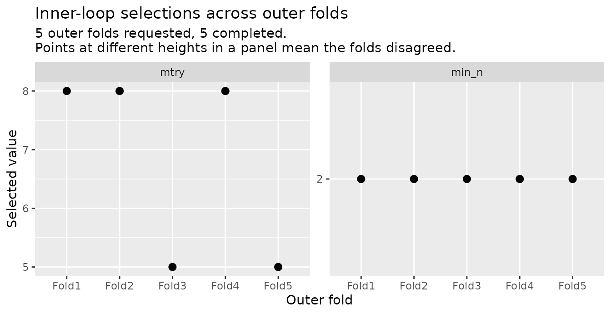
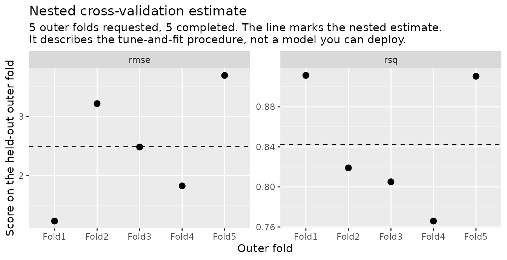

You tuned a model with cross-validation and kept the candidate that scored best. That score is not an estimate of how the model will do on new data. The candidate was chosen because it scored well on those resamples, so its score carries the selection along with it, and reporting it overstates what you have.
Nested cross-validation removes the contamination by putting the whole tune-and-fit procedure inside a second, outer resampling loop. Each outer fold tunes from scratch on its own analysis data, fits the winner there, and scores it once on assessment rows that no part of the tuning ever saw. Averaging those outer scores estimates how the procedure — resample, tune, select, fit — performs on new data.
That last sentence is the whole idea, and it has a consequence worth stating up front: what comes back is a property of the procedure, never of any one fitted model. The model you eventually deploy is a separate object, produced further down this page, and it has no honest performance number of its own. The nested estimate is what you report in its place — as a statement about the procedure that produced it, not as that model’s score. The section below names exactly which quantity it is.
The design
nested_resamples() builds the two-level structure: an
outer resampling, with an inner resampling attached to each outer
fold.
set.seed(1)
folds <- nested_resamples(
mtcars,
outside = vfold_cv(v = 5),
inside = vfold_cv(v = 5)
)
folds
#> # Nested resampling:
#> # outer: 5-fold cross-validation
#> # inner: 5-fold cross-validation
#> # A tibble: 5 × 3
#> splits id inner_resamples
#> <list> <chr> <list>
#> 1 <split [25/7]> Fold1 <vfold [5 × 2]>
#> 2 <split [25/7]> Fold2 <vfold [5 × 2]>
#> 3 <split [26/6]> Fold3 <vfold [5 × 2]>
#> 4 <split [26/6]> Fold4 <vfold [5 × 2]>
#> 5 <split [26/6]> Fold5 <vfold [5 × 2]>Each row is one outer fold. splits holds that fold’s
outer split, and inner_resamples holds an ordinary
rset built from its analysis rows alone — which is what the
tuning for that fold gets to see.
folds$inner_resamples[[1]]
#> # 5-fold cross-validation
#> # A tibble: 5 × 2
#> splits id
#> <list> <chr>
#> 1 <split [20/5]> Fold1
#> 2 <split [20/5]> Fold2
#> 3 <split [20/5]> Fold3
#> 4 <split [20/5]> Fold4
#> 5 <split [20/5]> Fold5mtcars has 32 rows, which keeps this page fast to build.
With that little data the tuning step is genuinely unstable, and the
fold-to-fold selections further down show it directly. It is not,
however, the case where nesting removes the most — that is wide data
searched hard, and a section near the end of this guide says why.
The model and the grid
Anything tune can tune, this can tune. Here it is a
random forest with two parameters marked for tuning, and an explicit
grid of candidates.
rf <- rand_forest(mtry = tune(), min_n = tune(), trees = 500) |>
set_engine("ranger") |>
set_mode("regression")
wf <- workflow(mpg ~ ., rf)
grid <- expand.grid(mtry = c(2L, 5L, 8L), min_n = c(2L, 10L))
grid
#> mtry min_n
#> 1 2 2
#> 2 5 2
#> 3 8 2
#> 4 2 10
#> 5 5 10
#> 6 8 10That is 6 candidates, each of which will be resampled inside every outer fold — so the run below fits 150 models for tuning, plus one per outer fold for scoring. Nested cross-validation is expensive, and that arithmetic is where the cost lives.
Running the loop
nested_tune_grid() drives the outer loop. For each outer
fold it calls tune::tune_grid() on that fold’s inner
resamples, selects the best candidate, finalizes the workflow, and fits
and scores it on the outer split. Every statistical step is
tune’s; what this package contributes is the loop, a
reproducibility contract, and a result that keeps what each fold
chose.
set.seed(2)
res <- nested_tune_grid(wf, folds, grid = grid)
res
#>
#> ── Nested cross-validation results ─────────────────────────────────────────────
#> Outer resamples: 5-fold cross-validation
#> Outer folds: 5 requested, 5 completed
#>
#> ── Selected parameters ──
#>
#> ! mtry: 8, 8, 5, 8, 5 (folds disagree)
#> ✔ min_n: 2 (all 5 completed folds agree)
#>
#> ── Estimate (5 of 5 outer folds) ──
#>
#> rmse (standard): 2.49
#> rsq (standard): 0.842
#>
#> ℹ A nested estimate describes the tune-and-fit procedure, not a model you can
#> deploy. Build that with `nested_final_fit()`, and report this estimate as
#> what its procedure achieves.What to report, and why
est <- collect_metrics(res)
est
#> # A tibble: 2 × 5
#> .metric .estimator mean n std_err
#> <chr> <chr> <dbl> <int> <dbl>
#> 1 rmse standard 2.49 5 0.447
#> 2 rsq standard 0.842 5 0.0293
rmse_row <- est[est$.metric == "rmse", ]Report that. The RMSE of 2.49, measured 5 times on rows the procedure
never touched, estimates one specific quantity, and it is worth naming
it: the k-fold test error of the tune-and-fit procedure
(Bayle et al., 2026). That is the error of resampling, tuning, selecting
and fitting — the whole thing — on the particular analysis sets these
folds drew, then predicting fresh data drawn like mtcars.
It is tied to the training sets this run actually used, which is what
separates it from the second bullet below.
Two quantities it is not, both easy to mistake it for:
- Not the risk of the model you deploy. That model is built further down this page on all 32 rows; its own error is a different quantity with a different value, and nothing here estimates it. What the nested number buys you is the right to describe the procedure that produced that model.
- Not the same quantity averaged over training sets. The average — how this procedure does across all datasets of this size, rather than on the ones these folds happened to draw — is usually what a reader has in mind, and it is much the harder thing to get. Luo and Barber (2026) prove that any assumption-free test of it needs a dataset many times larger than the training size being evaluated; a 5-fold outer loop supplies a ratio of 5/4, which is not that. So this package reports the estimate and offers no test of it.
Expect that number to run slightly pessimistic — to look a little worse than the procedure deserves. The mechanism is training-set size: every outer fold trains on its analysis rows only, so every model scored is built on less data than the model you finally deploy, and less data usually means worse predictions. That is a tendency, not a guarantee — Varma and Simon separate this training-size component, whose sign can go either way, from the selection-driven component, which is always optimistic.
Two published measurements give a sense of the size. Varma and Simon (2006) found a nested estimate of 54.2% against a true 50.0% on deliberately null data with 40 samples — a 4.2-point overshoot they attribute to training on 39 rows rather than 40. Wilimitis and Walsh (2023), working on 41,121 hospital visits, found nested cross-validation among the most pessimistic of the methods they compared, by roughly 1–2% of AUROC and 5–9% of AUPR against a held-out benchmark; on the regression half of the same study, their nested mean absolute error came in at 2.39 where the non-nested methods gave 2.38. Read those as two data points rather than a trend: they differ in data, metric and baseline, and the same study reports a cell where the nested estimate came out optimistic instead.
Two cautions on reading that. The gap is a property of the estimator, not a prediction about any one run: at the sample size on this page it is small next to fold-to-fold noise, so this particular vignette’s numbers could as easily land the other way, and nothing below is offered as a demonstration of it. And “pessimistic” is a claim about the procedure’s error, never a licence to adjust the reported figure upward — there is no correction here to apply.
std_err is the standard error of that mean —
the standard deviation of the 5 fold scores divided by the square root
of how many there were. It is not the fold-to-fold spread, which is
larger by that same factor, and it is not a confidence interval: this
package deliberately ships no inference on the nested estimate.
That has a consequence for the obvious next thing to do with two of
these numbers. If you run nested_tune_grid() on two
different workflows and one comes back lower, nothing in
collect_metrics() output tells you whether the difference
is real — there is no valid interval here to subtract. Bayle et al.
(2026) give a second, sharper reason not to reach for one: the stability
condition that makes a single procedure’s cross-validation interval
valid can fail for the difference between two procedures even
when it holds for each of them separately, and it fails hardest when the
two are similar — which is exactly the case where you most want the
comparison. Treat a gap between two nested estimates as a reason to look
closer, never as a result.
Now the number not to report. Any tuning run — the ones inside these outer folds, and the one behind the final model further down — carries resampling scores for every candidate it tried. Those scores are what selection looked at, and the winner’s is the best of a set scored on the very resamples that chose it. It therefore carries an optimistic component of unknown size, and nothing in the output tells you how large.
What it is not is reliably worse-looking. At this sample size the bias is small next to resampling noise, so a single comparison can land either way — the structural argument is the reason to distrust the number, not its sign. The final-model section below puts the two side by side.
Two things the nested estimate does not say, both easy to over-read:
- It is marginal over selection, not conditional on any one
configuration. It describes what happens when you run the
tuning procedure, including the fact that the procedure sometimes picks
differently. It is not a claim about the particular
mtryandmin_nyour deployed model happens to carry. - It describes new data drawn like your training data — not a different population, and not the same procedure run at a different sample size.
What each fold chose
The print method summarized this above, and .selected
holds it exactly: a list column of one-row tibbles, one per outer fold,
each holding the parameters that fold’s inner tuning chose. Stacked up,
with the fold each came from:
selected <- do.call(rbind, res$.selected)
data.frame(fold = res$id, mtry = selected$mtry, min_n = selected$min_n)
#> fold mtry min_n
#> 1 Fold1 8 2
#> 2 Fold2 8 2
#> 3 Fold3 5 2
#> 4 Fold4 8 2
#> 5 Fold5 5 2Across 5 outer folds, mtry took 2 distinct selected
values and min_n took 1. Most tools throw this away;
nestedtune keeps it, because it is information about the procedure
rather than noise in it.
autoplot() draws the same thing, one panel per tuned
parameter and one point per outer fold. A flat row means the folds
agreed; scatter means they did not.
autoplot(res)
Read it as a statement about how well-determined each tuning choice is at this sample size. A parameter the folds agree on is one the data picks clearly. A parameter they split over is one whose value is largely arbitrary — meaning whichever value your final model ends up carrying was not strongly preferred by the evidence. That is not a defect in the estimate: the outer scores already average over exactly this variability, which is what makes them describe the procedure honestly. It is a defect in any story you might tell about the selected parameters being the right ones.
Disagreement is the expected behaviour, not a symptom, wherever the
candidates in question perform about equally well. Bayle et al. (2026)
give the mechanism: as two candidates’ predictions converge, the
difference between their losses loses variance faster than the
noise in estimating that difference does, so which of them wins any
particular fold becomes close to a coin flip. The run above shows both
faces of it at once — the folds split over mtry, whose
candidates the data cannot separate here, and agree unanimously on
min_n, where they can.
The per-fold scores are worth a look for the same reason:
per_fold <- collect_metrics(res, summarize = FALSE)
per_fold
#> # A tibble: 10 × 4
#> id .metric .estimator .estimate
#> <chr> <chr> <chr> <dbl>
#> 1 Fold1 rmse standard 1.23
#> 2 Fold1 rsq standard 0.911
#> 3 Fold2 rmse standard 3.22
#> 4 Fold2 rsq standard 0.819
#> 5 Fold3 rmse standard 2.48
#> 6 Fold3 rsq standard 0.805
#> 7 Fold4 rmse standard 1.83
#> 8 Fold4 rsq standard 0.766
#> 9 Fold5 rmse standard 3.69
#> 10 Fold5 rsq standard 0.911
fold_rmse <- per_fold$.estimate[per_fold$.metric == "rmse"]
c(sd = sd(fold_rmse), std_err = sd(fold_rmse) / sqrt(length(fold_rmse)))
#> sd std_err
#> 1.0002719 0.4473352Wide spread across outer folds at this sample size is expected. Note
the two numbers above: 1 is how much the folds actually differ from each
other, and 0.45 is the std_err
collect_metrics() reports — the precision of their
mean. Quoting the second as though it described the folds
understates their disagreement.
The other view of autoplot() shows that spread, with the
dashed line at the nested estimate — the same number
collect_metrics() reports, so the figure and the summary
cannot drift apart:
autoplot(res, type = "performance")
The model you deploy
Nothing above produced a model you can predict with, and that is deliberate. The estimate describes the procedure; the model is a separate object, built by running that same procedure once more with the whole dataset in hand.
set.seed(3)
final <- nested_final_fit(wf, folds, grid = grid)
final
#>
#> ── Nested cross-validation final fit ───────────────────────────────────────────
#> Selected: mtry = 2, min_n = 2
#>
#> ℹ This model has no performance estimate of its own. Report the nested estimate
#> from `collect_metrics()` on the `nested_tune_grid()` result, which describes
#> the procedure that produced it.
#> ℹ Compare the parameters above with `.selected` from that run. Outer folds
#> choosing differently is selection instability, and it is information about
#> the procedure rather than noise.
#> ℹ `extract_tune_results()` returns the tuning run selection came from, and
#> `extract_scored_candidates()` the candidates it scored. Any metric reachable
#> through the first is a selection-time quantity, optimistically biased as a
#> claim about this model.The outer folds play no part here. Their selections are not pooled or voted on — they belong to the estimate, which describes the procedure across the instability they reveal.
The trained workflow comes out with extract_workflow(),
and predicts as any workflow does:
predict(extract_workflow(final), new_data = mtcars[1:3, ])
#> # A tibble: 3 × 1
#> .pred
#> <dbl>
#> 1 20.9
#> 2 20.9
#> 3 24.0Now the comparison promised above. final$tuning is the
tuning run this model’s parameters were selected from, and its best
score is the number a user is most tempted to report:
selection_scores <- collect_metrics(final$tuning)
selection_rmse <- selection_scores[selection_scores$.metric == "rmse", ]
best_selection_rmse <- min(selection_rmse$mean)
data.frame(
quantity = c("nested estimate (report this)", "best selection-time score"),
rmse = c(rmse_row$mean, best_selection_rmse)
)
#> quantity rmse
#> 1 nested estimate (report this) 2.490053
#> 2 best selection-time score 2.583402The selection-time score is higher than the nested estimate here —
2.58 against 2.49. Do not read the direction as the lesson. With 32 rows
a difference this size is comfortably inside what resampling noise
produces, and the point stands whichever way it falls: the
selection-time number was computed on the very resamples that chose the
winner, so it is not an estimate of performance on anything. It is kept
on the object because it is the record of what selection saw, and
collect_metrics() will hand it over without warning
you.
The model in hand has no honest number of its own. Everything computable from its training data was consumed by selecting it or by fitting it.
That is why both objects refuse tune’s ranking generics rather than answering them — for a different reason each. On the loop’s results they would rank outer folds, which is not a ranking of anything a user wants. On the final fit there is only one model and nothing to rank at all; what they would surface is the selection-time metrics above, dressed as a score.
tune::show_best(res, metric = "rmse")
#> Error in `tune::show_best()`:
#> ! No `show_best()` exists for this type of object.
tune::select_best(final, metric = "rmse")
#> Error in `tune::select_best()`:
#> ! No `select_best()` exists for this type of object.When this is worth the cost
Nesting is expensive, and it is not always worth it. What decides is how much room the selection step had to overfit in the first place — if there was little, there is little for the outer loop to remove.
It removes most when the search is large relative to the data. Tibshirani and Tibshirani (2009) measured the optimism of a tuned cross-validation score across two regimes and found it material only when the features vastly outnumber the observations — their phrase is p ≫ n, not merely p > n. With 400 observations and 100 features, the worst optimism they saw on pure noise was under 3 points; at 40 observations and 1000 features a shrunken-centroid classifier’s own score read 0.384 where the truth was 0.5. Even there it depends on the learner: in that same cell a linear SVM read 0.475 and a tree 0.498, both within 3 points of the truth. Wide data, a big grid, and a preprocessing step that the loop has to redo are where the money is. That paper’s own conclusion, worth knowing, is not to nest but to correct the flat score cheaply instead; it is cited here for where the bias lives, not for its remedy.
It removes little when the data is tall and the search is small. Wilimitis and Walsh (2023) ran exactly that case — 41,121 hospital visits, a modest parameter grid — and nesting bought nothing: its reported score was fractionally more conservative than the flat methods they compared it against, which is the pessimism above rather than a correction, and it cost time that grew quadratically in the fold count. They are explicit about why: with far more observations than features and a small search, there was almost no selection bias present to remove. Their recommendation, and this guide’s, is to nest when the feature space is wide relative to the sample, when many algorithms and parameters are in play, and when the compute is affordable.
Do not read that as “small data is fine without it”. Vabalas et al. (2019) simulated pure noise, where the honest accuracy is 50%, and found flat cross-validation still reporting better than chance at a sample size of 1000, while nested cross-validation was indistinguishable from chance at 96.5% of the sample sizes they tested. The bias thins with sample size; it does not conveniently disappear.
One caveat about this package’s own scope, from the same paper.
Vabalas et al. compared leaving feature selection outside the
loop against leaving parameter tuning outside it, and the first
was far more damaging — nesting the tuning alone did not rescue the
estimate. nested_tune_grid() orchestrates tuning, so if
your pipeline selects features, put that step in the recipe
inside the workflow you hand it. Everything in the workflow
is re-estimated inside every fold; anything you did to the data
before calling this package is not, and no result here can tell
you that happened.
By those lights the example on this page sits at the modest end:
mtcars has more rows than columns, the grid has 6 points,
and there is no feature selection at all. It is here because it builds
in seconds, not because it is where nesting pays best.
Reproducibility
Seed the session before the call, as elsewhere in tidymodels. Neither function takes a seed of its own:
args(nested_tune_grid)
#> function (object, resamples, grid = 10, metrics = NULL)
#> NULL
args(nested_final_fit)
#> function (object, resamples, grid = 10, metrics = NULL)
#> NULLEach draws and pins its own per-step seeds from the session state instead, and stores them, so any single piece is reproducible by hand:
res$.tuning_seed
#> [1] 794080207 1906307464 2010156236 1118907979 2046114256
final$tuning_seed
#> [1] 721735354Because each fold’s seeds are fixed by its position in the design rather than by the order the folds happen to run in, the result does not depend on how the loop is scheduled. And the caller’s own random state is put back as it was found:
before <- .Random.seed
invisible(nested_final_fit(wf, folds, grid = grid))
identical(before, .Random.seed)
#> [1] TRUE?nested_tune_grid and ?nested_final_fit
give the exact hand-replication recipe for each.
Writing it up
Everything a write-up needs is on the two objects. A minimal, honest report:
Hyperparameters (
mtry,min_n) were tuned over a 6-point grid by 5-fold cross-validation, nested inside a 5-fold outer cross-validation of the entire tune-and-fit procedure (n = 32). The outer folds give an estimated RMSE of 2.49 (SE 0.45) for the procedure. Across those 5 folds, selection took 2 distinct values ofmtryand 1 ofmin_n. The deployed model was produced by applying the same procedure to the full dataset, which selected mtry = 2 and min_n = 2.
The three things that make it honest are the ones this package exists to keep together: the estimate is attributed to the procedure and not to the model, the instability is reported rather than hidden, and the deployed model is described as what it is — the same procedure applied to all the data, carrying no performance claim of its own.
References
Bayle, A., Janson, L., & Mackey, L. (2026). The relative instability of model comparison with cross-validation. arXiv:2508.04409.
Luo, Y., & Barber, R. F. (2026). The limits of assumption-free tests for algorithm performance. Bernoulli, 32(3), 2427–2450.
Tibshirani, R. J., & Tibshirani, R. (2009). A bias correction for the minimum error rate in cross-validation. The Annals of Applied Statistics, 3(2), 822–829.
Vabalas, A., Gowen, E., Poliakoff, E., & Casson, A. J. (2019). Machine learning algorithm validation with a limited sample size. PLoS ONE, 14(11), e0224365.
Varma, S., & Simon, R. (2006). Bias in error estimation when using cross-validation for model selection. BMC Bioinformatics, 7, 91.
Wilimitis, D., & Walsh, C. G. (2023). Practical considerations and applied examples of cross-validation for model development and evaluation in health care: Tutorial. JMIR AI, 2, e49023.